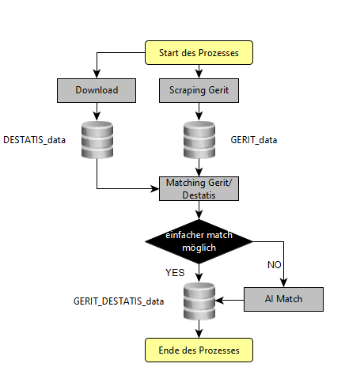

Installation
HEXmatchR kann folgendermaßen installiert werde:
remotes::install_git("http://srv-data01:30080/hex/hex-gerit/HEXmatchR")Was macht HEXmatchR?
HEXmatchR spielt über die Variable Organisation GERIT-Daten an den HEX. Diese erlauben es wiederum, HEX-Daten mit DESTATIS-Daten (z.B. Personal und Studierendenzahlen) anzureichern.

Dependencies
Damit HEXmatchR funktioniert, bedarf es einerseits der Daten von GERIT als auch der von DESTATIS.
Die GERIT Daten werden derzeit gescrapet, die DESTATIS-Daten werden einfach geladen (siehe link oben). Das Scraping wird zeitnah in das Paket überführt.
Die GERIT- und die DESTATIS-Daten werden durch merge_gerit_with_DESTATIS_system.R zusammengeführt. Dies geschieht folgendermaßen:

GERIT DESTATIS Match